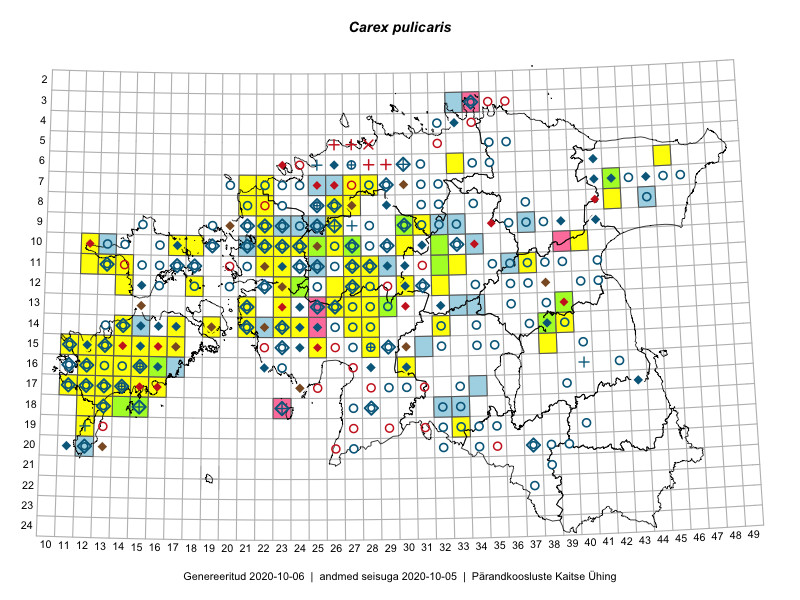

Carex pulicaris
Uuendatud: 2016-12-08
Kaardile koondatud taksonid: Carex pulicaris L.

Kaart põhineb 86 vaatlusel. Taime on leitud 53 ruudust.
| Ruut | Vaatleja(d) | Vaatlusaeg | Kirje tüüp | Viide andmebaasikirjele |
|---|---|---|---|---|
| 13-26 | Toomas Kukk, Thea Kull, Timo Luhamäe, Ott Luuk, Peedu Saar | 2015-06-28 | ruut/ala | vaata PlutoFis |
| 10-17 | Toomas Kukk, Eerik Leibak | 2015-08-12 | ruut/ala | vaata PlutoFis |
| 16-12 | Toomas Kukk, Mari Reitalu | 2014-06-20 | ruut/ala | vaata PlutoFis |
| 14-17 | Meeli Mesipuu, Kadri Tali | 2015-07-08 | ruut/ala | vaata PlutoFis |
| 14-17 | Meeli Mesipuu | 2015-07-08 | punkt | vaata PlutoFis |
| 14-19 | Meeli Mesipuu | 2015-07-11 | ruut/ala | vaata PlutoFis |
| 14-19 | Meeli Mesipuu | 2015-07-11 | punkt | vaata PlutoFis |
| 10-22 | Toomas Kukk, Thea Kull | 2014-08-21 | ruut/ala | vaata PlutoFis |
| 11-22 | Toomas Kukk, Thea Kull | 2014-08-21 | ruut/ala | vaata PlutoFis |
| 10-23 | Toomas Kukk, Thea Kull | 2014-08-22 | ruut/ala | vaata PlutoFis |
| 13-39 | Thea Kull | 2015-08-03 | ruut/ala | vaata PlutoFis |
| 14-38 | Thea Kull | 2015-08-07 | ruut/ala | vaata PlutoFis |
| 14-38 | Thea Kull | 2015-08-07 | punkt | vaata PlutoFis |
| 11-12 | Eeva-Maria Jeletsky, Tarmo Niitla | 2015-06-27 | ruut/ala | vaata PlutoFis |
| 13-23 | Ott Luuk, Peedu Saar | 2014-08-29 | ruut/ala | vaata PlutoFis |
| 11-37 | Ülle Jõgar, Illi Tarmu, K. Rünk | 2015-07-24 | ruut/ala | vaata PlutoFis |
| 17-12 | Mari Reitalu | 2014-08-31 | ruut/ala | vaata PlutoFis |
| 17-12 | Mari Reitalu | 2015-07-01 | ruut/ala | vaata PlutoFis |
| 17-12 | Mari Reitalu | 2015-08-27 | ruut/ala | vaata PlutoFis |
| 17-12 | Mari Reitalu | 2015-08-11 | ruut/ala | vaata PlutoFis |
| 15-25 | Maret Gerz, Leena Gerz | 2015-08-08 | ruut/ala | vaata PlutoFis |
| 16-12 | Mari Reitalu | 2015-08-23 | ruut/ala | vaata PlutoFis |
| 16-12 | Mari Reitalu | 2015-07-27 | ruut/ala | vaata PlutoFis |
| 16-12 | Mari Reitalu, Triin Reitalu | 2015-07-20 | ruut/ala | vaata PlutoFis |
| 17-13 | Mari Reitalu, Oliver Parrest | 2015-08-12 | ruut/ala | vaata PlutoFis |
| 15-12 | Mari Reitalu, Oliver Parrest | 2015-07-14 | ruut/ala | vaata PlutoFis |
| 16-13 | Mari Reitalu, Oliver Parrest | 2015-07-27 | ruut/ala | vaata PlutoFis |
| 18-12 | Mari Reitalu, Sirje Azarov, Oliver Parrest | 2015-08-02 | ruut/ala | vaata PlutoFis |
| 15-13 | Mari Reitalu, Oliver Parrest | 2015-07-24 | ruut/ala | vaata PlutoFis |
| 15-11 | Mari Reitalu, Oliver Parrest | 2015-07-16 | ruut/ala | vaata PlutoFis |
| 16-12 | Mari Reitalu | 2015-07-08 | ruut/ala | vaata PlutoFis |
| 10-30 | Toivo Sepp, Ott Luuk | 2015-08-21 | ruut/ala | vaata PlutoFis |
| 16-13 | Sirje Azarov, Aira Alasi | 2015-07-28 | ruut/ala | vaata PlutoFis |
| 07-42 | Mari Metsoja, Jaak-Albert Metsoja | 2015-07-23 | ruut/ala | vaata PlutoFis |
| 17-16 | Sirje Azarov, Aira Alasi | 2015-08-12 | ruut/ala | vaata PlutoFis |
| 18-14 | Mari Reitalu, Triin Reitalu | 2014-07-17 | ruut/ala | vaata PlutoFis |
| 18-15 | Mari Reitalu | 2014-07-17 | ruut/ala | vaata PlutoFis |
| 17-14 | Karin Kikas, Elle Rajandu | 2015-07-22 | ruut/ala | vaata PlutoFis |
| 13-28 | Jaak-Albert Metsoja, Mari Metsoja | 2015-06-10 | ruut/ala | vaata PlutoFis |
| 11-22 | Tõnu Ploompuu | 2015-08-21 | ruut/ala | vaata PlutoFis |
| 10-22 | Tõnu Ploompuu | 2015-08-21 | ruut/ala | vaata PlutoFis |
| 11-28 | Hanna-Eliisa Luts, Tõnu Ploompuu | 2015-07-21 | ruut/ala | vaata PlutoFis |
| 09-22 | Tõnu Ploompuu | 2015-07-14 | ruut/ala | vaata PlutoFis |
| 16-15 | Meeli Mesipuu | 2016-06-28 | ruut/ala | vaata PlutoFis |
| 14-28 | Thea Kull, Tiit Hallikma | 2016-07-08 | ruut/ala | vaata PlutoFis |
| 14-23 | Thea Kull, Eerik Leibak | 2016-07-05 | ruut/ala | vaata PlutoFis |
| 13-23 | Thea Kull, Eerik Leibak | 2016-07-05 | ruut/ala | vaata PlutoFis |
| 12-28 | Mari Reitalu, Eerik Leibak | 2016-07-06 | ruut/ala | vaata PlutoFis |
| 14-23 | Thea Kull, Eerik Leibak | 2016-07-05 | punkt | vaata PlutoFis |
| 11-32 | Aat Sarv, Jaak-Albert Metsoja | 2016-07-21 | ruut/ala | vaata PlutoFis |
| 11-13 | Thea Kull, Peedu Saar | 2016-08-10 | ruut/ala | vaata PlutoFis |
| 11-13 | Thea Kull, Peedu Saar | 2016-08-10 | punkt | vaata PlutoFis |
| 17-14 | Toomas Kukk, Meeli Mesipuu, Johannes Kõdar | 2016-08-11 | ruut/ala | vaata PlutoFis |
| 15-17 | Peedu Saar, Toomas Kukk | 2016-08-13 | ruut/ala | vaata PlutoFis |
| 14-14 | Peedu Saar, Maret Gerz | 2016-08-12 | ruut/ala | vaata PlutoFis |
| 13-26 | Maret Gerz, Liina Oja | 2016-07-08 | ruut/ala | vaata PlutoFis |
| 11-12 | Thea Kull, Peedu Saar | 2016-08-10 | punkt | vaata PlutoFis |
| 11-12 | Peedu Saar, Thea Kull | 2016-08-10 | ruut/ala | vaata PlutoFis |
| 15-16 | Meeli Mesipuu, Maret Gerz | 2016-08-13 | ruut/ala | vaata PlutoFis |
| 08-27 | Erkki Otsman, Sergei Smirnov | 2016-07-27 | ruut/ala | vaata PlutoFis |
| 12-24 | Sirje Azarov, Meeli Mesipuu | 2016-07-05 | ruut/ala | vaata PlutoFis |
| 13-27 | Indrek Tammekänd | 2016-08-31 | punkt | vaata PlutoFis |
| 10-26 | Sirje Azarov, Meeli Mesipuu | 2016-07-06 | punkt | vaata PlutoFis |
| 10-22 | Sirje Azarov, Oliver Parrest | 2016-07-07 | ruut/ala | vaata PlutoFis |
| 07-22 | Mari Reitalu, Eerik Leibak | 2016-07-07 | ruut/ala | vaata PlutoFis |
| 18-13 | Mari Reitalu, Sirje Azarov | 2016-07-31 | ruut/ala | vaata PlutoFis |
| 15-15 | Meeli Mesipuu | 2016-09-23 | ruut/ala | vaata PlutoFis |
| 16-14 | Meeli Mesipuu | 2016-09-26 | ruut/ala | vaata PlutoFis |
| 08-42 | Peedu Saar, Timo Luhamäe | 2016-07-29 | ruut/ala | vaata PlutoFis |
| 14-19 | Meeli Mesipuu | 2016-06-29 | ruut/ala | vaata PlutoFis |
| 14-27 | Peedu Saar, Timo Luhamäe | 2016-07-08 | ruut/ala | vaata PlutoFis |
| 14-19 | Meeli Mesipuu | 2016-06-29 | punkt | vaata PlutoFis |
| 15-15 | Meeli Mesipuu | 2016-09-23 | punkt | vaata PlutoFis |
| 16-14 | Meeli Mesipuu | 2016-09-26 | punkt | vaata PlutoFis |
| 16-15 | Meeli Mesipuu | 2016-06-18 | punkt | vaata PlutoFis |
| 12-24 | Meeli Mesipuu, Sirje Azarov | 2016-07-05 | punkt | vaata PlutoFis |
| 10-26 | Meeli Mesipuu, Sirje Azarov | 2016-07-06 | ruut/ala | vaata PlutoFis |
| 11-27 | Meeli Mesipuu | 2016-07-08 | ruut/ala | vaata PlutoFis |
| 11-27 | Meeli Mesipuu | 2016-07-08 | punkt | vaata PlutoFis |
| 17-14 | Meeli Mesipuu, Toomas Kukk, Johannes Kõdar | 2016-08-11 | punkt | vaata PlutoFis |
| 14-21 | Toomas Kukk | 2012-06-29 | punkt | vaata PlutoFis |
| 14-21 | Toomas Kukk | 2012-06-25 | ruut/ala | vaata PlutoFis |
| 14-21 | Toomas Kukk | 2012-06-25 | ruut/ala | vaata PlutoFis |
| 12-23 | Meeli Mesipuu, Maret Gerz | 2015-08-24 | ruut/ala | vaata PlutoFis |
| 14-21 | Ott Luuk, Peedu Saar | 2016-06-29 | punkt | vaata PlutoFis |
| 16-30 | Hannes Pehlak, Thea Kull | 2016-07-20 | ruut/ala | vaata PlutoFis |